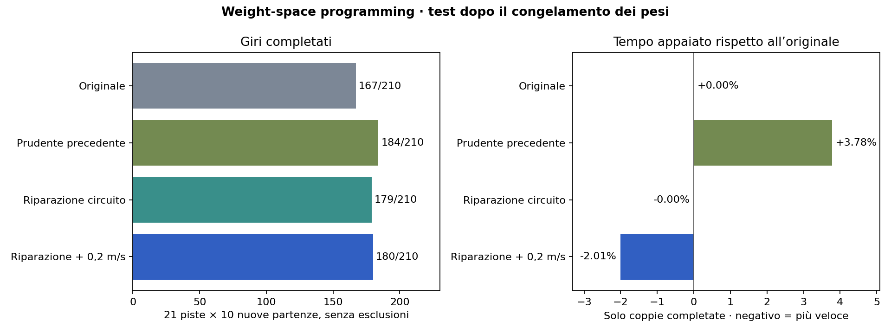

| Modello | Completamenti | Collisioni | Tempo appaiato rispetto all’originale |
|---|---|---|---|
| Originale | 167/210 | 43 | riferimento |
| Prudente precedente | 184/210 | 26 | +3.78% |
| Riparazione, velocità invariata | 179/210 | 31 | -0.00% |
| Riparazione +0,2 m/s, candidato primario | 180/210 | 30 | -2.01% |

Come distinguere un errore da un tornante
I neuroni 41 e 61 del primo strato contribuiscono a sterzate positive estreme, anche in tornanti completati. Nei campioni terminali problematici la parete sinistra dista 0,26–0,32 m. Nei campioni riusciti con forte sterzata il minimo osservato è 0,441 m. Il nuovo circuito combina l’attivazione interna con un secondo segnale, la distanza media letta dai raggi 880–919 sul lato sinistro.
Con una soglia di 0,4 m, la combinazione di muro vicino, h41 positivo e h61 negativo attenua il comando di sterzo. Due neuroni quasi costanti ospitano il circuito. In tutto cambiano 1.276 scalari. La versione accelerata modifica un solo bias rispetto alla riparazione, equivalente a +0,2 m/s. Su 6.889 osservazioni, la formula prevista e i tensori differiscono al massimo di 8,7 × 10⁻⁷ in unità normalizzate.
Sviluppo e confronto
| Intervento | Successi (originale 10/21) | Tempo appaiato |
|---|---|---|
angular_smooth |
11/21 | -0.063% |
panic_gate |
12/21 | +0.067% |
wall_panic |
13/21 | -0.053% |
wall_panic_fast |
12/21 | -2.030% |
Dimezzare la temperatura di quattro neuroni induce un bias a sinistra. Trapiantare una testa di sterzo storica amplifica i picchi. Queste ipotesi vengono scartate prima dei rollout. Le quattro varianti in tabella totalizzano 84 episodi sulle sette piste di sviluppo. I quattro checkpoint finali sono identificati tramite hash prima di eseguire 840 episodi, dieci nuovi seed da 40101 a 41010 su ciascuna pista.
Ogni episodio dura al massimo 200 secondi simulati. Per completare il giro occorre visitare almeno il 99% dei waypoint in ordine e attraversare la linea di partenza senza una collisione segnalata. Partenze e rumore LiDAR sono appaiati. I tempi si confrontano sulle stesse partenze completate dai modelli indicati. Un valore negativo indica un giro più rapido.
Sia l’originale sia il candidato principale collidono 13 volte entro 0,10 s. Nei giri completati il controsterzo con deriva ≥5° e velocità ≥3 m/s dura al massimo 0,14 s, sotto la soglia di 0,5 s. Il rilevatore di collisione proietta la velocità lungo i raggi ignorando β, mentre il moto include l’angolo di deriva. Questo limita l’interpretazione degli eventi in forte sbandata.
Audit indipendente del banco di prova
Il valutatore ripristina la raceline, i contatori e il buffer dello sterzo a ogni episodio. Il seed controlla sia la partenza sia il rumore LiDAR. Gli orientamenti iniziali sono coerenti con la tangente della raceline su tutte le 21 piste, con 95º percentile dell’errore assoluto sotto 0,03 radianti. La telemetria riproduce i risultati di 15 episodi di controllo. Ogni modello è valutato in un processo separato perché il simulatore LiDAR condivide la mappa a livello di classe.
Nel test originale della fase due, 12 delle 45 collisioni avvenivano entro 0,10 s e 16 entro 1 s. Una collisione precoce può dipendere dalla posa iniziale, ma la sua inevitabilità va verificata caso per caso. Gli hash del manifest distinguono la riparazione veloce principale dal confronto con sola sterzata prima del test.
Completamenti e tempi per pista
| Pista | Originale | Prudente | Circuito | Circuito veloce | Tempo veloce/originale |
|---|---|---|---|---|---|
| Austin | 9/10 | 9/10 | 9/10 | 9/10 | -2.00% |
| BrandsHatch | 10/10 | 10/10 | 10/10 | 10/10 | -2.01% |
| Budapest | 2/10 | 10/10 | 10/10 | 10/10 | -2.16% |
| Catalunya | 10/10 | 10/10 | 10/10 | 10/10 | -1.99% |
| Hockenheim | 10/10 | 10/10 | 10/10 | 10/10 | -2.10% |
| IMS | 4/10 | 4/10 | 4/10 | 4/10 | -2.05% |
| Melbourne | 10/10 | 10/10 | 10/10 | 10/10 | -2.00% |
| MexicoCity | 10/10 | 10/10 | 10/10 | 10/10 | -1.97% |
| Monza | 7/10 | 8/10 | 5/10 | 6/10 | -1.84% |
| MoscowRaceway | 10/10 | 10/10 | 10/10 | 9/10 | -2.12% |
| Nuerburgring | 10/10 | 10/10 | 10/10 | 10/10 | -2.03% |
| Oschersleben | 2/10 | 7/10 | 7/10 | 7/10 | -2.53% |
| Sakhir | 10/10 | 10/10 | 10/10 | 10/10 | -2.04% |
| SaoPaulo | 10/10 | 10/10 | 10/10 | 10/10 | -2.00% |
| Sepang | 10/10 | 10/10 | 10/10 | 10/10 | -2.00% |
| Silverstone | 10/10 | 10/10 | 10/10 | 10/10 | -1.99% |
| Sochi | 0/10 | 0/10 | 0/10 | 0/10 | — |
| Spa | 6/10 | 9/10 | 7/10 | 8/10 | -1.93% |
| Spielberg | 10/10 | 10/10 | 10/10 | 10/10 | -1.98% |
| YasMarina | 7/10 | 7/10 | 7/10 | 7/10 | -2.01% |
| Zandvoort | 10/10 | 10/10 | 10/10 | 10/10 | -1.93% |